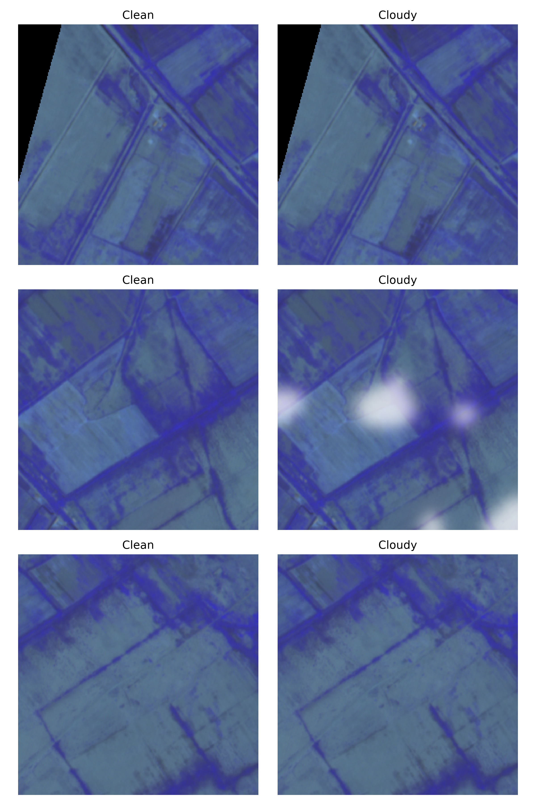
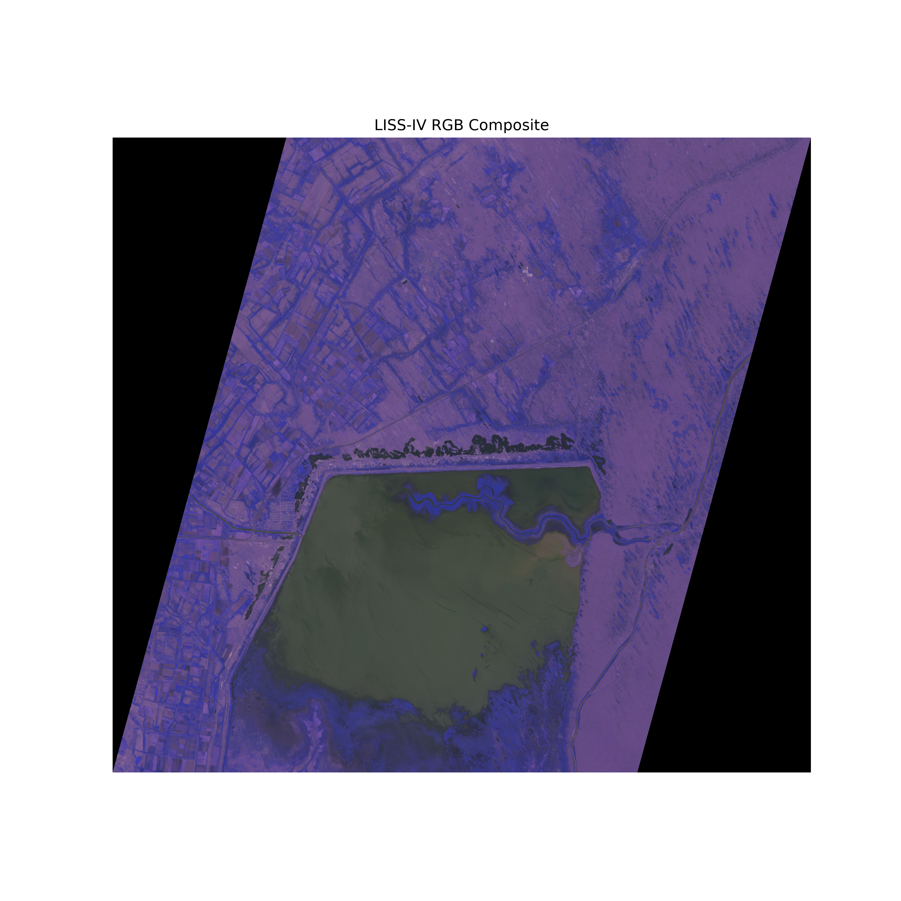
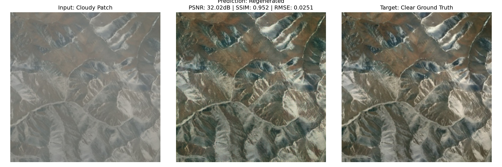

Revealing the Earth
Beneath the Clouds.|
AI-Powered Cloud Removal and Reconstruction for ISRO's LISS-IV Satellite Imagery. Fusing Sentinel-1 SAR and LISS-IV sensors using CycleGAN architectures to restore obscured ground details with georeferenced spatial and spectral fidelity.
High-Resolution Cloud Obscuration
Why traditional optical remote sensing struggles to capture persistent ground realities.
ISRO's LISS-IV sensor aboard Resourcesat provides exceptional high-resolution optical imagery at 5.8 meters. This detail is crucial for monitoring micro-level changes in agriculture, land use, and forestry.
However, persistent cloud cover frequently obscures critical scenes, rendering up to 60% of optical data unusable in tropical regions. This leaves massive temporal gaps in GIS analysis.
Existing restoration techniques either use simple spatial interpolation which blurs textures, or rely on temporal optical averages which fail during rapid changes. We need a model that reconstructs details physically, not statistically.

System Architecture
Data Acquisition
LISS-IV Input
5.8m spatial resolution optical bands (G, R, NIR)
Sentinel-1 SAR Input
C-band microwave radar (VV/VH dual-pol) data
Preprocessing
Preprocessing Unit
- Geo-alignment & co-registration
- Radiometric normalization
- Cloud & shadow mask generation
AI Processing
AI Processing Unit
- Cloud detection module
- SAR-guided CycleGAN model
- Feature fusion & refinement
Output Layer
Output Unit
- Cloud-free GeoTIFF generation
- Quality metrics calculation
- GIS-ready product layers
Software Requirements Specification
Our Team
SABARESH K
Sri Eshwar College of Engineering and Technology
SAADHANA S
Sri Eshwar College of Engineering and Technology
PRANIKA R
Sri Eshwar College of Engineering and Technology
About CloudClear-LISS
The Challenge: Clouds Obscuring Earth's Surface
LISS-IV provides ultra-high resolution (5.8m) optical imagery. Persistent clouds obscure up to 60% of tropical scenes.
Our Innovation: AI-Powered Cloud Reconstruction
Fuses Sentinel-1 microwave radar backscatter with PyTorch UNet generative networks to restore clear ground details.
Key Features & Comparison
LISS-IV 5.8m Optimized
Multi-Sensor Fusion
AI Cloud Detection (94%+ Acc)
GPU Accelerated Inference
ISRO LISS-IV Model Workspace


📊 REAL-TIME TELEMETRY & SCIENTIFIC EVALUATION
Contact Us
Sabaresh K
sabaresh.k2025aids@sece.ac.in
Saadhana S
saadhana.s2025aids@sece.ac.in
Pranika R
pranika.r2025aids@sece.ac.in
Send Message
📍 Our Institution
Sri Eshwar College of Engineering and Technology
Coimbatore, Tamil Nadu, India